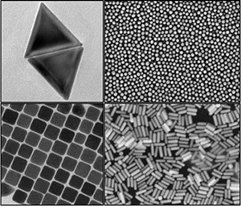
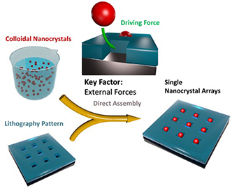
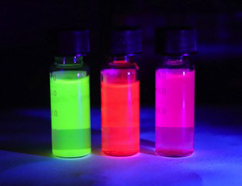

研究兴趣方向
纳米科学 - 纳米颗粒
合成, 组装, 表征, 应用
纳米颗粒的合成与表面改性
 Nanocrystals are normally known as those very small particles constructed by hundreds or thousands of atoms with dimensions range from 1-100 nanometer. They exhibit unusual, size-dependent optical, luminescent, magnetic and electronic properties. Nanocrystals can be wildly used in many areas of aspects, such as colour displays, drug delivery, solar cells, fast bio-sensing, etc. Those amazing properties are highly dependent on the kind of nanocrystals (eg. gold, silver, silica, etc), size of nanocrystals (monodispersity, nanometer-scale), the shape of nanocrystals (triangle, sphere, cube, rod, etc.) and surface properties (coating, ligands, etc.), and so on. To fully realise those outstanding properties in practical applications, one of the biggest research areas is to develop the methods to synthesis nanocrystals in solution with controlled morphology, highly monodispersity, and designed surface functionalisation. (Figure: Gold nanocrystals with different shapes. Copy right reserved.)
Direct Assemlby and Nanofabrication
 One of the biggest challenge in morden nanoscience and nanotechnology is how to effectively convert chemically synthesised nanocrystals into a solid-state device for daily applications. Most of the nanocrystals are produced in solution for better morphology control and large scalability. However, it is not feasible to take a vial of liquid using in common. Although, nanocrystals can be easily coated onto the substrate by drop casting or spinning coating. It somehow screened most of the nanocrystals properties due to aggreation and disorder on the surface. A highly effective method to assemlbe nanocrystals from solution onto a substrate with controlled order and pattern can maximumly realise the potential of the product based on the properties of the assembled nanocrystals. The direct assembly method is the approch that directly assemble colloidal synthesised nanocrystals on a pre-pattern substrate to fabricate designed structure for a certain application. The key factor for a successful direct assembly is to apply a proper external driving force. (Figure: Adapted from 10.1002/adma.201904551. Copy right reserved.)
Nano Optics and Single Particle Spectroscopy
 One of the outstanding property of nanocrystals is their size-dependent optical property. For example, stained glass, wildly used in churches, is credited to the mixing of glass and metallic nanoparticles. It makes the glass vibrantly coloured but still retain its transparency. At the current time, many studies regarding the "colour" of nanocrystals have been carried for better understanding. And researchers are already able to tune the optical properties by selectively synthesis nanocrystals with given morphology. The optical property of nanocrystal has been wildly used in many area of aspects such as, security features, coloured displays (eg. QLED), biological marking and sensing, etc. A deeper research and understanding of optical property of nanocrystals can promote their application in pracitcal application. We use single particle spectroscopy to finely study the relation between the nanocrystal morphology and its optical property. (Figure: CdSe based Quantum Dots. Copy right reserved.)